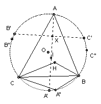

The angle bisectors of the triangle ABC meet the circumcircle again at A', B', C'. Show that area A'B'C' ≥ area ABC.
Solution

Let H be the orthocenter. Let AH meet the circumcircle at A". Define B" and C" similarly. ∠A"CB = ∠A"AB = 90o - ∠B = ∠BCH, and A"H is perpendicular to BC. Hence A" is the reflection of H in BC and so triangles A"CB and HCB are congruent. Similarly for C"BA and B"AC. So the hexagon AB"CA"BC" has twice the area of ABC.
Let B'C' meet AA' at X. Then ∠B'XA = ∠B'C'A + ∠XAC' = ∠B'C'A + ∠XAB + ∠C'AB = ∠B'BA + ∠A'AB + ∠C'CB = ∠B/2 + ∠A/2 + ∠C/2 = 90o. Hence A'A is an altitude of the triangle A'B'C'. Hence the hexagon AB'CA'BC' has twice the area of the triangle A'B'C'.
But A' is the midpoint of the arc BC, so area A'BC ≥ area A"BC. Similarly for the other two pairs of triangles, so area AB'CA'BC' ≥ area AB"CA"BC". Hence area A'B'C' ≥ area ABC.

© John Scholes
jscholes@kalva.demon.co.uk
30 Dec 2002
Last corrected/updated 30 Dec 02